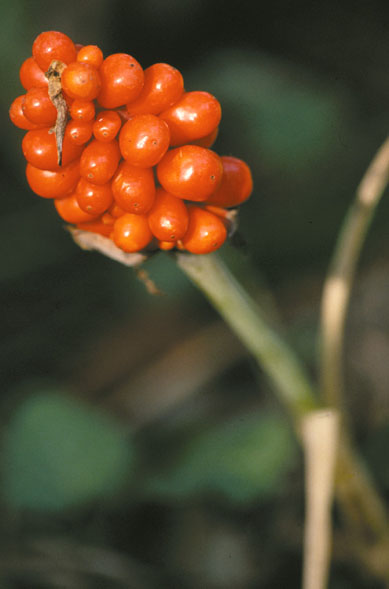
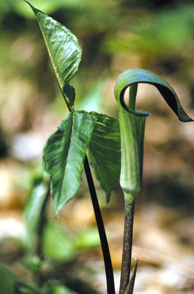
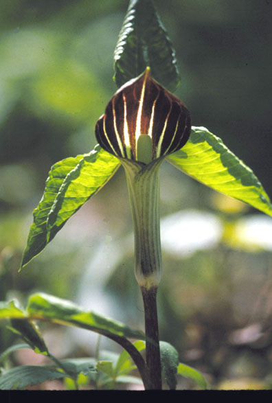

Arisaema Triphyllum
Family: Araceae
Jack-in-the-Pulpit
Swink/Wilhelm # 4


Click to view larger photo
FLOWERING: April - May
SEED TIMING: Mid-August through September
HABITAT: Rich moist woods, wet swamps, or drier areas in high open woods where soil is rich in humus
DIAGNOSTIC FEATURES: 15 - 30 inches high. Perennial. Leaflike hood (spathe) surrounds a central column (spadix). Spathe is green or purplish brown, often striped. Leaves, 1 or 2, long-stalked, 3 parted. Plant is dioecious. Females bear fruit.
TO PICK: Shortly after spathe withers a dense cluster of green berries appears. Cluster slowly expands, turns orange, then scarlet red. Often leaves deteriorate before fruit matures so that seed collectors see only a single green stalk supporting the cluster of brilliant red berries which can then be picked. Seed cleaning should be started within a few days of collection while pulp is still soft.